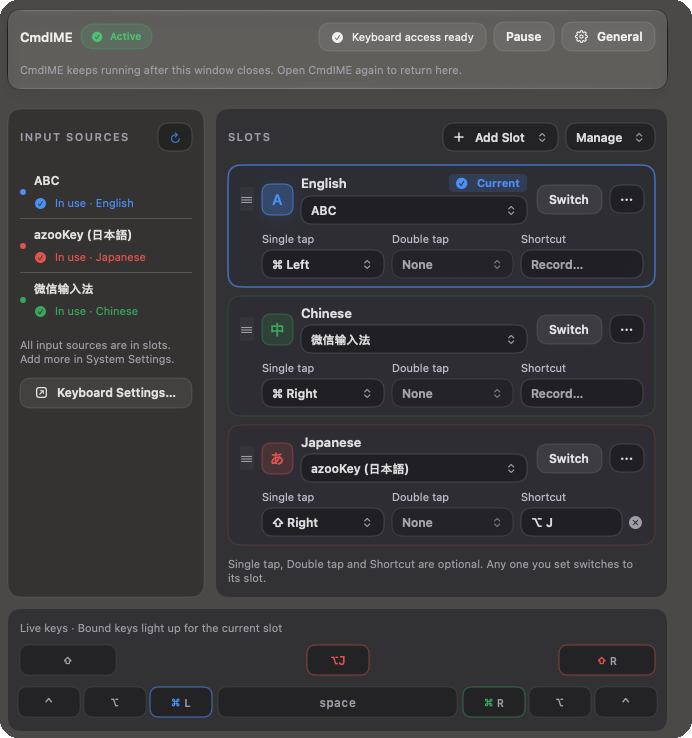
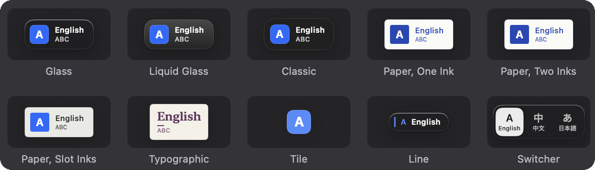
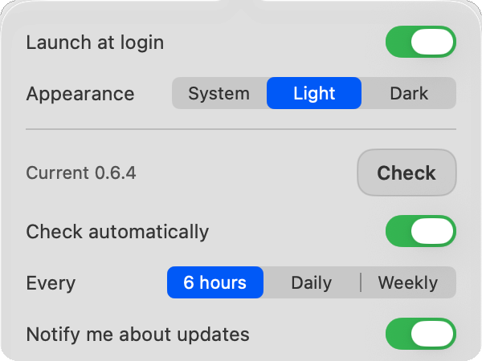

One key per input source. No cycling. No guessing. 每个输入法，一个专属键。不用轮流切换，也不用猜。 入力ソースごとに、専用キー。巡回しない。迷わない。
CmdIME gives every input source on your Mac its own key.
CmdIME 让你 Mac 上的每个输入源都有自己的按键。
CmdIME は、Mac の入力ソースそれぞれに専用のキーを割り当てます。
Interactive preview: press a key or tap a cap to play a sample. Your Mac's input source is not changed.交互预览：按一下键或点按键帽，播放示例。不会改变你 Mac 的输入源。インタラクティブプレビュー：キーを押すかキーキャップをタップすると、サンプルを再生します。Mac の入力ソースは変わりません。
Install安装インストール
Free and open source (MIT). Requires macOS 13 or later. Preview build: signed, not notarized.免费开源（MIT）。需要 macOS 13 或更高版本。预览版本：已签名，但未经公证。無料のオープンソース（MIT）です。macOS 13 以降が必要です。プレビュービルド：署名済みですが、公証（notarize）はされていません。
Paste into Terminal粘贴到“终端”中运行ターミナルに貼り付けて実行
curl -fsSL https://raw.githubusercontent.com/ShunmeiCho/cmd-ime/main/script/install.sh | bash- Run the command in Terminal.在“终端”中运行这行命令。ターミナルでこのコマンドを実行します。
- Allow Accessibility and Input Monitoring in System Settings > Privacy & Security.在系统设置 > 隐私与安全性中允许 Accessibility（辅助功能）和 Input Monitoring（输入监控）。システム設定 > プライバシーとセキュリティで Accessibility（アクセシビリティ）と Input Monitoring（入力監視）を許可します。
- Follow the in-app Setup guide to your first switch.按应用内的设置向导完成第一次切换。アプリ内の Setup guide（セットアップガイド）に沿って、最初の切り替えまで進みます。
What the installer does安装脚本会做什么インストーラーが行うこと
The installer downloads the latest release, verifies it against the published SHA-256, installs CmdIME.app in /Applications, links keyboardctl and opens the app. Later updates install from inside the app with Update Now.
安装脚本会下载最新的发布版本，对照公布的 SHA-256 进行校验，把 CmdIME.app 安装到 /Applications，链接 keyboardctl，然后打开应用。之后的更新可以在应用内通过 Update Now（立即更新）安装。
インストーラーは最新のリリースをダウンロードし、公開されている SHA-256 と照合して検証したうえで、CmdIME.app を /Applications にインストールし、keyboardctl をリンクしてアプリを開きます。以降のアップデートは、アプリ内の Update Now（今すぐアップデート）からインストールできます。
Why not Control+Space为什么不用 Control+SpaceControl+Space との違い


- It cycles. With three or more input sources you look at the menu bar to see where you landed. With CmdIME each key always lands on the same source.
- Even with two input sources, it toggles. Control+Space flips to the other source, so you have to know which one you are in before you press. A CmdIME key always means the same source: press Left Command and you are in English, wherever you were before.
- One thumb instead of a chord. Left and Right Command sit under your thumbs and take one tap; Control+Space is two keys pressed together.
- Taps and shortcuts stay apart. Command+C, Command+Tab and other chords never count as a Command tap, so the keys you already use keep working.
- 它是循环切换的。输入源达到三个或更多时，你得看一眼菜单栏才知道切到了哪里。用 CmdIME，每个键总是切到同一个输入源。
- 只有两个输入法，它也是来回切换。Control+Space 切到的是“另一个”，所以按之前你得先知道自己现在在哪个。CmdIME 的每个键永远对应同一个输入法：按左 Command 就是英文，不管之前在哪个。
- 一根拇指，而不是组合键。左右 Command 就在拇指下面，轻点一下即可；Control+Space 要同时按两个键。
- 单击和快捷键互不干扰。Command+C、Command+Tab 等组合键永远不会被当成一次 Command 单击，你已经在用的按键照常工作。
- 巡回式だから。入力ソースが 3 つ以上あると、どこに切り替わったかをメニューバーで確認する必要があります。CmdIME なら、各キーは常に同じ入力ソースに切り替わります。
- 入力ソースが 2 つでも、交互に切り替わるだけだから。Control+Space は「もう一方」に切り替えるので、押す前に今どちらなのかを知っておく必要があります。CmdIME のキーはいつも同じ入力ソースを指します。左 Command を押せば、直前がどちらでも英語になります。
- 同時押しではなく、親指 1 本で済むから。左右の Command は親指の下にあり、軽く叩くだけです。Control+Space は 2 つのキーの同時押しです。
- タップとショートカットを区別するから。Command+C、Command+Tab などのショートカットが Command のタップとして扱われることはないので、普段使っているキーはそのまま使えます。
How a switch works一次切换的过程切り替えのしくみ


What you get功能一览できること
A slot board
Installed input sources on the left, your slots on the right. Drag a source in to add a slot, drag a handle to reorder, rename, color or remove a slot, and undo a removal. The list follows System Settings as you add or remove input sources.
Three optional triggers per slot
A single tap or a double tap of one of the eight modifier keys, and a shortcut such as Option+J. Set any of them; any one you set switches to that slot.
槽位面板
左侧是已安装的输入源，右侧是你的槽位。把输入源拖进来即可添加槽位，拖动拖动柄调整顺序，可以重命名、设置颜色或移除槽位，移除后还能撤销。添加或移除输入源时，列表会跟随系统设置同步更新。
每个槽位三种可选触发方式
八个修饰键之一的单击或双击，以及一个 Option+J 这样的快捷键。任选其中几种设置；设置了的任意一种都会切换到该槽位。
スロットボード
左側にインストール済みの入力ソース、右側にスロットが並びます。入力ソースをドラッグしてスロットを追加し、ハンドルをドラッグして並べ替え、スロットの名前変更、色の設定、削除ができ、削除は取り消せます。入力ソースを追加または削除すると、一覧はシステム設定に追従します。
スロットごとに任意の 3 つのトリガー
8 つの修飾キーのいずれかのシングルタップまたはダブルタップ、そして Option+J のようなショートカットです。どれを設定してもかまわず、設定したどのトリガーでもそのスロットに切り替わります。

A switch indicator near the caret光标附近的切换指示气泡キャレットの近くに表示される切り替えインジケーター
Sixteen built-in themes, including Glass, Liquid Glass on macOS 26 and later, paper styles, a switcher that shows every slot, a badge that shrinks it to the glyphs and a mark that keeps only the source you switched to, plus your own themes and fonts. Every slot takes any color you pick, and the indicator can fill with it.
十六种内置主题，包括 Glass、macOS 26 及以上的 Liquid Glass、纸张风格、显示所有槽位的切换器、只保留字形的小徽标，以及只显示切换到的输入法的标记，另外还支持你自己的主题和字体。每个槽位的颜色都能任意自选，气泡可以直接用这个颜色显示。
Glass、macOS 26 以降の Liquid Glass、paper 系のスタイル、すべてのスロットを表示する switcher、それを字形だけに縮めた badge、切り替え先だけを示す mark など 16 の組み込みテーマに加え、独自のテーマやフォントも使えます。スロットごとに好きな色を選べ、インジケーターをその色で表示できます。

Updates from inside the app
A check every six hours by default, a summary of what changed beside Update Now, and an in-place install that keeps your permissions. CmdIME asks GitHub for the newest release (nothing else is sent), and Check automatically can be switched off in General.
A settings window that follows light and dark
Or stays on the one you pick.
keyboardctl
A command-line tool for scanning, binding, switching and diagnosing.
应用内更新
默认每六小时检查一次，在 Update Now 旁边附上改动摘要，原地安装并保留你的权限。CmdIME 只向 GitHub 查询最新的 Release（除此之外不发送任何内容），Check automatically 开关可以在 General 里关掉。
跟随浅色和深色的设置窗口
也可以固定为你选的那一种。
keyboardctl
一个用于扫描、绑定、切换和诊断的命令行工具。
アプリ内からのアップデート
既定では 6 時間ごとに確認し、Update Now の横に変更点の概要を表示し、権限を保ったままその場でインストールします。CmdIME が問い合わせるのは GitHub の最新リリースだけで（それ以外の情報は送信しません）、Check automatically は General でオフにできます。
ライトとダークに追従する設定ウィンドウ
どちらかに固定することもできます。
keyboardctl
スキャン、バインド、切り替え、診断のためのコマンドラインツールです。

Troubleshooting故障排除トラブルシューティング
"CmdIME is damaged" or或または "Apple cannot check it for malicious software"
The app is not damaged. Preview builds are signed but not notarized, and a zip downloaded in a browser carries a quarantine flag, so Gatekeeper blocks the first launch. The "is damaged" message usually offers no Open Anyway. Either of these works:
- Delete the downloaded zip and app, then install with the one-line installer from Install, which does not go through the browser quarantine.
Or keep the downloaded app: move
CmdIME.appto/Applications, then remove the quarantine flag:xattr -dr com.apple.quarantine /Applications/CmdIME.app
If macOS shows "Apple cannot check it for malicious software" instead, System Settings > Privacy & Security may offer Open Anyway; removing the flag as above also works. Apple's documentation on Gatekeeper and Developer ID explains the checks.
应用并没有损坏。预览版已签名但未公证，而浏览器下载的 zip 会带上隔离标记，所以 Gatekeeper 会拦住第一次启动。“已损坏”这个提示下通常没有 Open Anyway（仍要打开）可点。下面两种方法任选其一：
- 删掉下载的 zip 和应用，用安装里的一行命令重新安装。它不经过浏览器的隔离流程。
或者保留已下载的应用：先把
CmdIME.app移到“应用程序”（/Applications），再去掉隔离标记：xattr -dr com.apple.quarantine /Applications/CmdIME.app
如果 macOS 显示的是 "Apple cannot check it for malicious software"（Apple 无法检查其是否包含恶意软件），系统设置 > 隐私与安全性里可能会有 Open Anyway；按上面的方法去掉标记也可以。Apple 关于 Gatekeeper 和 Developer ID 的文档说明了这些检查。
アプリは壊れていません。プレビュービルドは署名済みですが公証されておらず、ブラウザーでダウンロードした zip には隔離（quarantine）属性が付くため、Gatekeeper が初回起動を止めます。「壊れている」というメッセージでは、通常 Open Anyway（このまま開く）は表示されません。次のどちらかで開けます。
- ダウンロードした zip とアプリを削除し、インストールにある 1 行のインストーラーで入れ直します。ブラウザーの隔離の仕組みを通りません。
ダウンロードしたアプリを使う場合は、
CmdIME.appを「アプリケーション」（/Applications）に移してから、隔離属性を削除します。xattr -dr com.apple.quarantine /Applications/CmdIME.app
"Apple cannot check it for malicious software" と表示された場合は、システム設定 > プライバシーとセキュリティに Open Anyway が出ることがあります。上の方法で属性を削除しても開けます。確認の仕組みについては、Apple の Gatekeeper と Developer ID のドキュメントで説明されています。